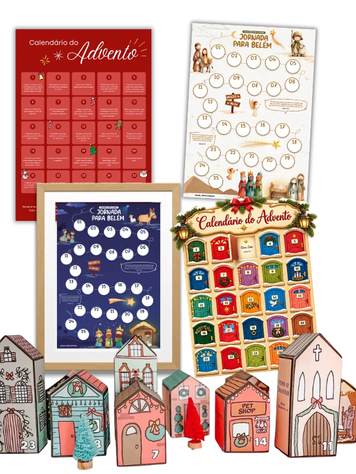
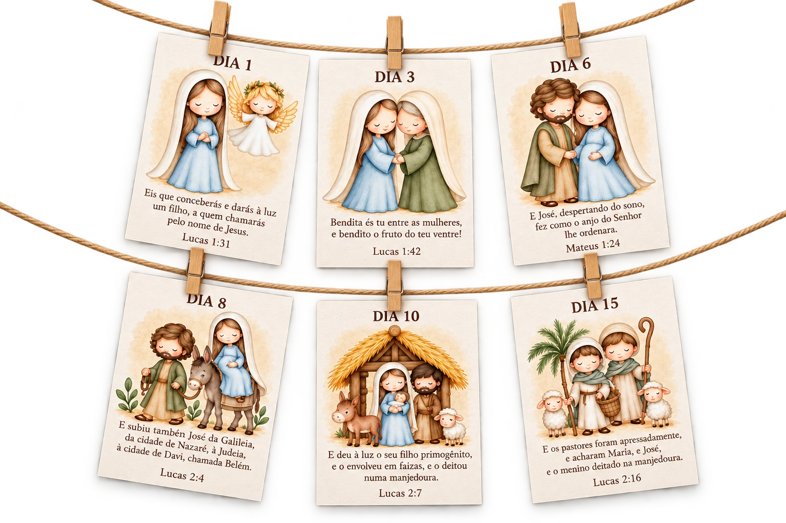
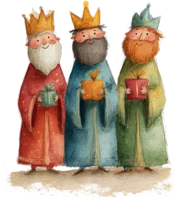
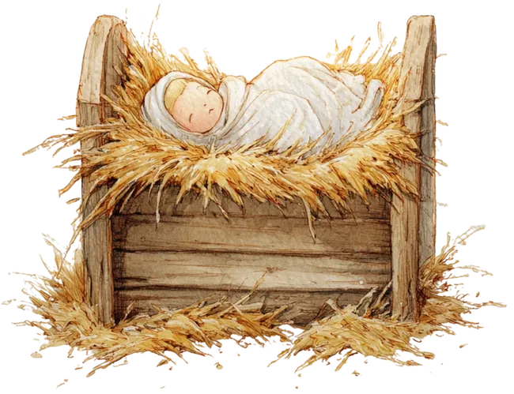
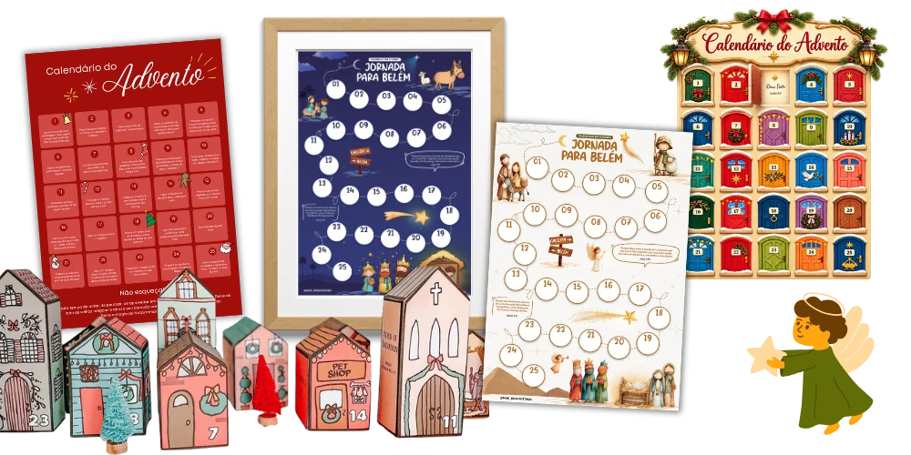

Envelopes de Gratidão
Um convite para reconhecer e agradecer as pequenas bênçãos de cada dia.
UMA TRADIÇÃO PARA VIVER EM FAMÍLIA
Celebrando o verdadeiro Natal
7 materiais digitais para imprimir e preparar o Natal em família, com fé, gratidão e boas ações. Receba hoje no seu e-mail.
Um dia de cada vez. Uma lembrança para a vida.

PEQUENOS MOMENTOS. UM GRANDE SIGNIFICADO. Veja tudo o que você vai receberO SENTIDO DE CELEBRAR
Entre presentes, compras e preparativos, é fácil deixar em segundo plano o que torna essa data tão especial: o nascimento do menino Jesus.
O Calendário do Advento convida sua família a contar os dias até o Natal com expectativa, carinho e fé — trazendo esse significado para dentro de casa.
Uma forma de esperar juntos.
E celebrar o que realmente importa.
CONHEÇA OS MATERIAIS
Um kit para transformar a espera pelo Natal em momentos especiais.
Um convite para reconhecer e agradecer as pequenas bênçãos de cada dia.
Casinhas para montar e dar vida a uma encantadora tradição natalina.
Pequenos gestos de amor para colocar o significado do Natal em prática.
Uma contagem ilustrada para acompanhar os dias até a chegada do Natal.
A história ilustrada em disco para compartilhar o nascimento de Jesus.
Uma descoberta a cada portinha para preparar o coração para o Natal.

Um Natal cheio de possibilidades
Materiais do kit e inspirações de montagem. Produto digital; itens de decoração não inclusos.

Fé para ensinar.
Carinho para compartilhar.
Memórias para guardar.
CELEBRANDO O VERDADEIRO NATAL

Kit completo + bônus
Arquivos digitais para imprimir e viver em família.
De R$ 97,00 por apenas
à vista · pagamento único
Você economiza R$ 77,10 (79% OFF)
Aproveite o mês de outubro para garantir seu kit por R$ 19,90.
Em novembro, o valor será R$ 47,00.O preço sobe em
Pagamento 100% seguro · Acesso pelo Google Drive
✦ Garantia de 7 dias: se não gostar, devolvemos seu dinheiro.
MENSAGENS QUE AQUECEM O CORAÇÃO
A alegria de esperar por Jesus, compartilhada por outras famílias.
PARA VIVER ESSE TEMPO EM FAMÍLIA

Quero preparar esse Natal em famíliaCOMPRE COM TRANQUILIDADE
Receba os arquivos e conheça os materiais com calma. Se o kit não for o que você esperava, solicite o reembolso em até 7 dias após a compra.
Basta responder ao e-mail em que você recebeu o link de acesso e solicitar o reembolso para receber de volta o valor pago.
ANTES DE COMEÇAR
Não. Nosso produto é 100% digital: você recebe arquivos para imprimir quantas vezes quiser. Pode compartilhar as impressões com familiares e amigos, sem fins lucrativos. Nenhum material físico será enviado pelo correio.
Sim! O material inclui orientações de impressão e indicação dos materiais para preparar as atividades. Assim, você pode escolher o papel adequado para cada proposta e organizar tudo com mais facilidade.
Após a aprovação do pagamento, você recebe no e-mail informado na compra o link de acesso a uma pasta no Google Drive com todos os arquivos, prontos para baixar e imprimir. Confira se digitou seu e-mail corretamente e verifique também as pastas de spam e promoções.
Não. Você pode imprimir em casa ou levar os arquivos a uma gráfica ou papelaria de sua preferência. A impressão e os materiais de montagem não estão incluídos no valor do kit.
Vamos preparar um Natal especial em família?
De R$ 97,00 por R$ 19,90 à vista
Aproveite o mês de outubro para garantir seu kit por R$ 19,90.
Em novembro, o valor será R$ 47,00.O preço sobe em